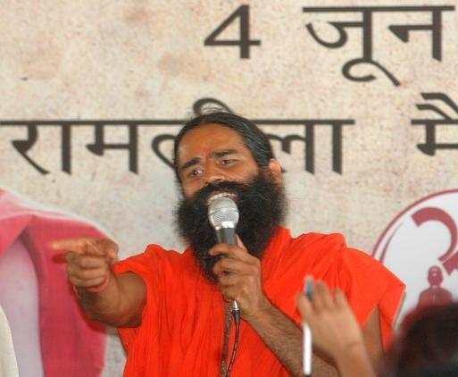

Ramdev's ground protests at Ramlila Maidan

Following Anna Hazare's initial protest, a second major protest took place at the Ramlila Maidan, New Delhi on June 4, 2011. The leader for these protests was Swami Ramdev; his aim was to highlight the need for strong legislation to repatriate black money deposited abroad. Ramdev demanded that untaxed money invested abroad should be declared to be the wealth of the nation and, further, that the act of caching money alleged to have been obtained illegally in foreign banks should be declared a crime against the state. It is estimated that around $350 billion to $1.4 trillion worth of black money is stashed away in foreign banks.Ramdev declared that a people's movement to liberate the country from rampant corruption and build a strong spiritual ‘Bharat' would be launched by him in June. The movement was called "Satyagraha against Corruption". He declared one of the main objectives of the movement was to bring about an end to corruption and bring back black money stashed away in various financial institutions in the country and abroad. Four senior Union Ministers Pranab Mukherjee, Kapil Sibal, Pawan Kumar Bansal and Subodh Kant Sahay met Ramdev to discuss his issues and demands at Delhi Airport on June 1, 2011. Back-channel talk between two sides were held in The Claridges, New Delhi on June 2, 2011. The next day, talks were held for a third time between the ministers and Ramdev and both sides claimed consensus. The government gave a response to the demands but Ramdev planned to go ahead with his hunger strike.
The ground protests
A volunteer centre at the extreme end of Ramlila Maidan was set up and the ground was booked for 40 days for the protest. 250,000 square metres (2,700,000 sq ft) of overhead waterproof tenting and 650 toilets were stationed inside the maidan, out of which 40 percent were designated for women. A drinking water facility, medical facility and a media centre with three communication towers.
Ramdev claimed that Bharat Swabhiman Yatra had evoked massive support from the masses and more than 10 crore people[citation needed] had been directly involved with the movement. His yatra ended on June 1 at Ujjain in Madhya Pradesh after traveling over 100,000 kilometres (62,000 mi)[citation needed] across the country. Almost 3.2 million "netizens" joined the campaign.
On the midnight of 5 June, police raided the site where Ramdev was fasting and forcefully detained him and removed his supporters from the site after firing tear gas shells and resorting to lathicharge to end his day-old indefinite hunger strike. Seventy-one people were injured and moved to hospital, four of whom were reported to be in critical condition. Finance Minister Pranab Mukherjee called the police action "unfortunate", but added that the government had to do that as Ramdev had no permission to hold a protest at the Ramlila Ground.
About 5,000 supporters were still missing according to Ramdev. Jadeep Arya, a key advisor on Ramdev’s team, said that about 19 girls students from the Chotipur Gurukul who were seated near the dais were thought to be still missing.] Behen Suman, women’s representative of the Trust, said many of these girls were roughed up when the police tried to reach Ramdev and were crying since police officials were pulling their hair, dragging them and their clothes were torn. Police, however, said no one was missing.
There is an allegation that CCTV footage of the raid is missing.
He maintained that second phase of Bharat Swabhiman Yatra would begin from October 2011 year and the Yatra would once again travel a distance of 100,000 kilometres (62,000 mi).
A senior police officer commented on the police action saying, "there were talks in the police headquarters since June 2 that Baba Ramdev would be detained as we knew he is definitely not going to hold a yoga camp." Allegedly, Ramdev's detention was not a spontaneous decision but had been planned for several days.
The police said Ramdev was informed around 11 pm (IST) on Saturday that his permission to continue his agitation had been cancelled. By that time, over 5000 police officers, including 12 battalions of the Delhi Police, three battalions of Rapid Action Force, two of Central Reserve Police Force commandos and local police were briefed by senior police officers to get ready for action. The Ramlila Ground was then surrounded by several buses and tempos,[vague] heading towards the ground from Haryana, Rajasthan, Uttar Pradesh and Punjab but were sent back from the borders.
Protest against police action
On 6 June, the National Human Rights Commission of India issued notices to the Union Home Secretary, Delhi Chief Secretary and the Delhi City Commissioner of Police seeking reports within two weeks regarding the midnight crackdown at the Ramlila Ground.
In a response to the crackdown on Ramdev, Hazare said that he would hold a one-day hunger strike at Jantar Mantar on 8 June. The venue was changed to Rajghat when he could not get police permission to do so. Government response Congress General Secretary Digvijay Singh called Ramdev a "cheat" and "fraud". According to him the government had reached an agreement before the protests were held. Prime Minister Manmohan Singh wrote to Ramdev, asking to cease-and-desist from holding the protests. Nationalist Congress Party General Secretary Tariq Anwar said that "Both Hazare and Ramdev are blackmailing the government and they should first peep into their own hearts." Pawan Bansal commented on the midnight police action and said that "It was not a crackdown, we [the government] had to do it to maintain law and order".
All India Congress Committee secretary Janardan Dwivedi described Ramdev's protest as a political game by Bharatiya Janata Party pointing out that despite being treated in the same hospital as Swami Nigamananda Saraswati who fasted for over two months, Ramdev got more attention.
Police action
Police clarification